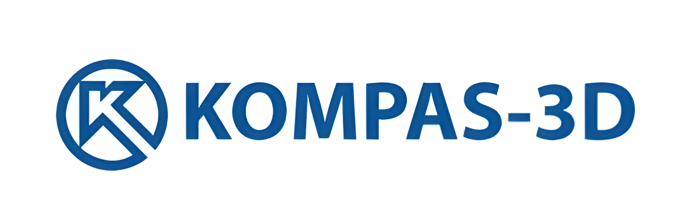

Наш план
- Познакомиться
- Создать свой сайт
- Создать модель в компасе
- Сделать и распечатать проект в паре на 3D принтере
В чём работали
Работали мы в компас 3D и HTML
КОМПАС-3D – это российская импортонезависимая система трехмерного проектирования, ставшая стандартом для тысяч предприятий и сотен тысяч профессиональных пользователей.
КОМПАС-3D широко используется для проектирования изделий основного и вспомогательного производств в таких отраслях промышленности, как машиностроение (транспортное, сельскохозяйственное, энергетическое, нефтегазовое, химическое и т.д.), приборостроение, авиастроение, судостроение, станкостроение, вагоностроение, металлургия, промышленное и гражданское строительство, товары народного потребления и т. д.
Наша цель была пройти весь курс и мы его прошли, а ещё получить много знаний и удовольствия